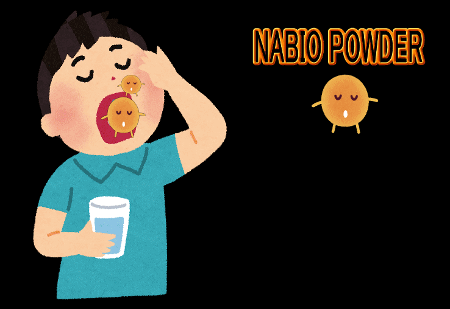
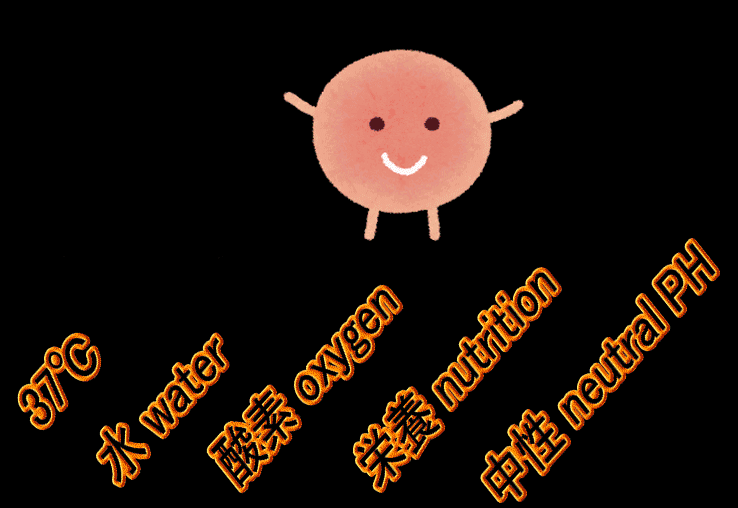

あなたの
健康
を
支えたい。
製品の開発・販売に取り組んでおります。
腸内工場
からだは、内側で支えるしくみを持っています。わたしたちは、そのはたらきに着目しています。

自社基準にもとづく
製造体制
ナビオの製品は
世界の人々の健康に役立っています。
弊社は納豆由来の健康食品原料の製造を手掛けてきました。
弊社の製品1グラムには、100億個以上の納豆菌が含まれています。
これは、市販納豆1パックに含まれる納豆菌数に相当します。
さらに超低温処理を行い、腸内で増殖しやすい納豆菌になっています。
ユニークな製品はサプリ原料として、納豆の食習慣のない海外諸国にも多く輸出されています。




Products 商品紹介
ナビオの製品には、ナットウキナーゼ、FAS、ビタミンK2、
ポリアミン、納豆菌がバランスよく含まれています。
ナトフェミン 納豆力
ナットウキナーゼ(納豆キナーゼ)は納豆菌がつくる酵素です。
納豆菌の増殖により、ナットウキナーゼ(納豆キナーゼ)が作られます。
納豆菌は、ナットウキナーゼだけでなく、ビタミンK2やビタミンB群などの健康成分も作っています。
ナトフェミンPAは、納豆菌の生み出す成分を凝縮して作られた製品です。

妙果酵素 納豆パワー
弊社粉末を原料とするソフトカプセル製品です。
日本薬局方最新版に準拠した腸溶カプセルの製品です。
弊社製品に含まれる納豆菌は腸内でビタミンKを産生しますので、ワーファリン服用中はお召し上がりになれません。
弊社製品のお召上がり方
-
１日二粒をめどに、食後にお召し上がりください。
食事に含まれる炭水化物が餌となって、納豆菌が増殖します。 -
すっぱいものを食べた後に摂取しても構いません。
ナットウキナーゼは胃酸のような酸性の液体に触れると、消失します。
納豆菌は強酸でも死滅することなく、小腸で増殖します。 -
毎日、決まった時間にお召し上がりください。
腸で増殖する納豆菌は、24時間以上ナットウキナーゼやビタミンKなどの健康成分を
持続的に産生しますが、納豆菌の数は徐々に減少します。毎日、納豆菌を補給することをお勧めします。

Company 会社概要
長年にわたる
納豆菌の研究成果を
製品化。
納豆は健康によい食品として、広く認知されています。
納豆に関する科学研究の成果を取り入れて製品化したのが弊社の製品です。
納豆菌は増殖中に様々な酵素やビタミンを作ります。
弊社の製品にも納豆の産み出す酵素やビタミンが含まれていますが、弊社製品は腸内で納豆菌に酵素やビタミンを産生させることをコンセプトにした製品です。

Nabio product features ナビオ製品の特長
-
ナビオの製品に含まれる納豆菌は休眠状態の納豆菌です(芽胞菌といいます)。休眠状態の納豆菌は100℃の熱でも、pH1の強酸でも死滅しません。
-
ナビオの製品は、1グラムに数百億個の納豆菌が含まれています。世界の人口数よりも多い数です。
-
大豆を納豆菌発酵させる点では、食品の納豆と同じです。ただ、納豆菌数を最大化する特殊な技術で製造されています。